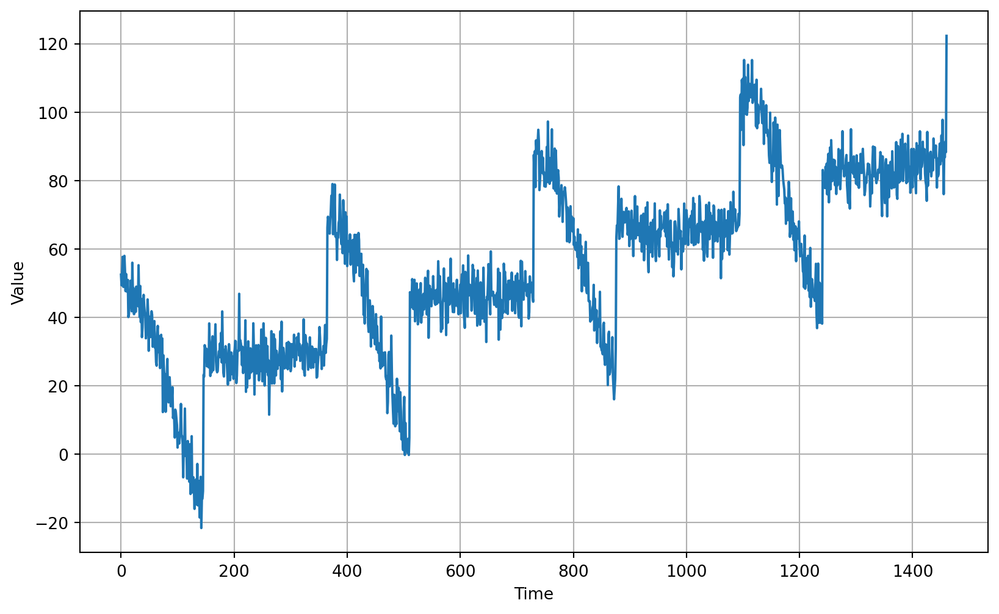
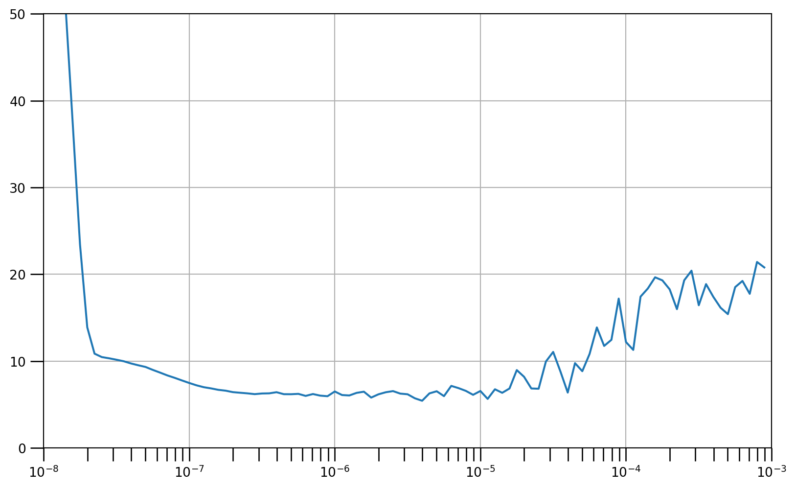
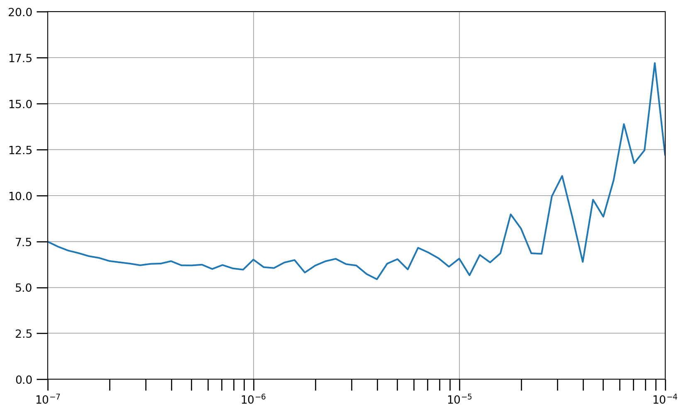
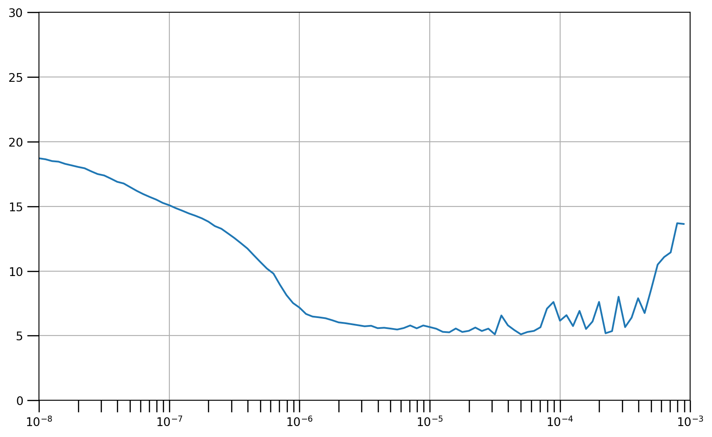

Code
import tensorflow as tf
import numpy as np
import matplotlib.pyplot as pltWeek 3 Recurrent Neural Networks for Time Series
Recurrent Neural networks and Long Short Term Memory networks are really useful to classify and predict on sequential data. This week we’ll explore using them with time series…

import tensorflow as tf
import numpy as np
import matplotlib.pyplot as pltdef plot_series(time, series, format="-", start=0, end=None):
"""
Visualizes time series data
Args:
time (array of int) - contains the time steps
series (array of int) - contains the measurements for each time step
format - line style when plotting the graph
start - first time step to plot
end - last time step to plot
"""
# Setup dimensions of the graph figure
plt.figure(figsize=(10, 6))
if type(series) is tuple:
for series_num in series:
# Plot the time series data
plt.plot(time[start:end], series_num[start:end], format)
else:
# Plot the time series data
plt.plot(time[start:end], series[start:end], format)
# Label the x-axis
plt.xlabel("Time")
# Label the y-axis
plt.ylabel("Value")
# Overlay a grid on the graph
plt.grid(True)
# Draw the graph on screen
plt.show()
def trend(time, slope=0):
"""
Generates synthetic data that follows a straight line given a slope value.
Args:
time (array of int) - contains the time steps
slope (float) - determines the direction and steepness of the line
Returns:
series (array of float) - measurements that follow a straight line
"""
# Compute the linear series given the slope
series = slope * time
return series
def seasonal_pattern(season_time):
"""
Just an arbitrary pattern, you can change it if you wish
Args:
season_time (array of float) - contains the measurements per time step
Returns:
data_pattern (array of float) - contains revised measurement values according
to the defined pattern
"""
# Generate the values using an arbitrary pattern
data_pattern = np.where(season_time < 0.4,
np.cos(season_time * 2 * np.pi),
1 / np.exp(3 * season_time))
return data_pattern
def seasonality(time, period, amplitude=1, phase=0):
"""
Repeats the same pattern at each period
Args:
time (array of int) - contains the time steps
period (int) - number of time steps before the pattern repeats
amplitude (int) - peak measured value in a period
phase (int) - number of time steps to shift the measured values
Returns:
data_pattern (array of float) - seasonal data scaled by the defined amplitude
"""
# Define the measured values per period
season_time = ((time + phase) % period) / period
# Generates the seasonal data scaled by the defined amplitude
data_pattern = amplitude * seasonal_pattern(season_time)
return data_pattern
def noise(time, noise_level=1, seed=None):
"""Generates a normally distributed noisy signal
Args:
time (array of int) - contains the time steps
noise_level (float) - scaling factor for the generated signal
seed (int) - number generator seed for repeatability
Returns:
noise (array of float) - the noisy signal
"""
# Initialize the random number generator
rnd = np.random.RandomState(seed)
# Generate a random number for each time step and scale by the noise level
noise = rnd.randn(len(time)) * noise_level
return noise# Parameters
time = np.arange(4 * 365 + 1, dtype="float32")
baseline = 10
amplitude = 40
slope = 0.05
noise_level = 5
# Create the series
series = baseline + trend(time, slope) + seasonality(time, period=365, amplitude=amplitude)
# Update with noise
series += noise(time, noise_level, seed=42)
# Plot the results
plot_series(time, series)
# Define the split time
split_time = 1000
# Get the train set
time_train = time[:split_time]
x_train = series[:split_time]
# Get the validation set
time_valid = time[split_time:]
x_valid = series[split_time:]# Parameters
window_size = 20
batch_size = 32
shuffle_buffer_size = 1000def windowed_dataset(series, window_size, batch_size, shuffle_buffer):
"""Generates dataset windows
Args:
series (array of float) - contains the values of the time series
window_size (int) - the number of time steps to include in the feature
batch_size (int) - the batch size
shuffle_buffer(int) - buffer size to use for the shuffle method
Returns:
dataset (TF Dataset) - TF Dataset containing time windows
"""
# Generate a TF Dataset from the series values
dataset = tf.data.Dataset.from_tensor_slices(series)
# Window the data but only take those with the specified size
dataset = dataset.window(window_size + 1, shift=1, drop_remainder=True)
# Flatten the windows by putting its elements in a single batch
dataset = dataset.flat_map(lambda window: window.batch(window_size + 1))
# Create tuples with features and labels
dataset = dataset.map(lambda window: (window[:-1], window[-1]))
# Shuffle the windows
dataset = dataset.shuffle(shuffle_buffer)
# Create batches of windows
dataset = dataset.batch(batch_size).prefetch(1)
return dataset# Generate the dataset windows
dataset = windowed_dataset(x_train, window_size, batch_size, shuffle_buffer_size)# Build the Model
model_tune = tf.keras.models.Sequential([
tf.keras.layers.Lambda(lambda x: tf.expand_dims(x, axis=-1),
input_shape=[window_size]),
tf.keras.layers.SimpleRNN(40, return_sequences=True),
tf.keras.layers.SimpleRNN(40),
tf.keras.layers.Dense(1),
tf.keras.layers.Lambda(lambda x: x * 100.0)
])
# Print the model summary
model_tune.summary()Model: "sequential"
┏━━━━━━━━━━━━━━━━━━━━━━━━━━━━━━━━━┳━━━━━━━━━━━━━━━━━━━━━━━━┳━━━━━━━━━━━━━━━┓ ┃ Layer (type) ┃ Output Shape ┃ Param # ┃ ┡━━━━━━━━━━━━━━━━━━━━━━━━━━━━━━━━━╇━━━━━━━━━━━━━━━━━━━━━━━━╇━━━━━━━━━━━━━━━┩ │ lambda (Lambda) │ (None, 20, 1) │ 0 │ ├─────────────────────────────────┼────────────────────────┼───────────────┤ │ simple_rnn (SimpleRNN) │ (None, 20, 40) │ 1,680 │ ├─────────────────────────────────┼────────────────────────┼───────────────┤ │ simple_rnn_1 (SimpleRNN) │ (None, 40) │ 3,240 │ ├─────────────────────────────────┼────────────────────────┼───────────────┤ │ dense (Dense) │ (None, 1) │ 41 │ ├─────────────────────────────────┼────────────────────────┼───────────────┤ │ lambda_1 (Lambda) │ (None, 1) │ 0 │ └─────────────────────────────────┴────────────────────────┴───────────────┘
Total params: 4,961 (19.38 KB)
Trainable params: 4,961 (19.38 KB)
Non-trainable params: 0 (0.00 B)
Using Huber loss
# Set the learning rate scheduler
lr_schedule = tf.keras.callbacks.LearningRateScheduler(
lambda epoch: 1e-8 * 10**(epoch / 20))
# Initialize the optimizer
optimizer = tf.keras.optimizers.SGD(momentum=0.9)
# Set the training parameters
model_tune.compile(loss=tf.keras.losses.Huber(), optimizer=optimizer)
# Train the model
history = model_tune.fit(dataset, epochs=100, callbacks=[lr_schedule],verbose=0)# Define the learning rate array
lrs = 1e-8 * (10 ** (np.arange(100) / 20))
# Set the figure size
plt.figure(figsize=(10, 6))
# Set the grid
plt.grid(True)
# Plot the loss in log scale
plt.semilogx(lrs, history.history["loss"])
# Increase the tickmarks size
plt.tick_params('both', length=10, width=1, which='both')
# Set the plot boundaries
plt.axis([1e-8, 1e-3, 0, 50])
# Set the figure size
plt.figure(figsize=(10, 6))
# Set the grid
plt.grid(True)
# Plot the loss in log scale
plt.semilogx(lrs, history.history["loss"])
# Increase the tickmarks size
plt.tick_params('both', length=10, width=1, which='both')
# Set the plot boundaries
plt.axis([1e-7, 1e-4, 0, 20])
# Build the model
model = tf.keras.models.Sequential([
tf.keras.layers.Lambda(lambda x: tf.expand_dims(x, axis=-1),
input_shape=[window_size]),
tf.keras.layers.SimpleRNN(40, return_sequences=True),
tf.keras.layers.SimpleRNN(40),
tf.keras.layers.Dense(1),
tf.keras.layers.Lambda(lambda x: x * 100.0)
])
# Set the learning rate
learning_rate = 1e-6
# Set the optimizer
optimizer = tf.keras.optimizers.SGD(learning_rate=learning_rate, momentum=0.9)
# Set the training parameters
model.compile(loss=tf.keras.losses.Huber(),
optimizer=optimizer,
metrics=["mae"])
# Train the model
history = model.fit(dataset,epochs=100,verbose=0)# Initialize a list
forecast = []
# Reduce the original series
forecast_series = series[split_time - window_size:]
# Use the model to predict data points per window size
for time in range(len(forecast_series) - window_size):
forecast.append(model.predict(forecast_series[time:time + window_size][np.newaxis]))
# Convert to a numpy array and drop single dimensional axes
results = np.array(forecast).squeeze()
# Plot the results
plot_series(time_valid, (x_valid, results))def model_forecast(model, series, window_size, batch_size):
"""Uses an input model to generate predictions on data windows
Args:
model (TF Keras Model) - model that accepts data windows
series (array of float) - contains the values of the time series
window_size (int) - the number of time steps to include in the window
batch_size (int) - the batch size
Returns:
forecast (numpy array) - array containing predictions
"""
# Generate a TF Dataset from the series values
dataset = tf.data.Dataset.from_tensor_slices(series)
# Window the data but only take those with the specified size
dataset = dataset.window(window_size, shift=1, drop_remainder=True)
# Flatten the windows by putting its elements in a single batch
dataset = dataset.flat_map(lambda w: w.batch(window_size))
# Create batches of windows
dataset = dataset.batch(batch_size).prefetch(1)
# Get predictions on the entire dataset
forecast = model.predict(dataset)
return forecast# Reduce the original series
forecast_series = series[split_time - window_size:-1]
# Use helper function to generate predictions
forecast = model_forecast(model, forecast_series, window_size, batch_size)
# Drop single dimensional axis
results = forecast.squeeze()
# Plot the results
plot_series(time_valid, (x_valid, results))# Compute the MSE and MAE
print(tf.keras.metrics.mean_squared_error(x_valid, results).numpy())81.265686print(tf.keras.metrics.mean_absolute_error(x_valid, results).numpy())6.6564226clear
tf.keras.backend.clear_session()# Build the Model
model_tune = tf.keras.models.Sequential([
tf.keras.layers.Lambda(lambda x: tf.expand_dims(x, axis=-1),
input_shape=[window_size]),
tf.keras.layers.Bidirectional(tf.keras.layers.LSTM(32, return_sequences=True)),
tf.keras.layers.Bidirectional(tf.keras.layers.LSTM(32, return_sequences=True)),
tf.keras.layers.Bidirectional(tf.keras.layers.LSTM(32)),
tf.keras.layers.Dense(1),
tf.keras.layers.Lambda(lambda x: x * 100.0)
])
# Print the model summary
model_tune.summary()Model: "sequential"
┏━━━━━━━━━━━━━━━━━━━━━━━━━━━━━━━━━┳━━━━━━━━━━━━━━━━━━━━━━━━┳━━━━━━━━━━━━━━━┓ ┃ Layer (type) ┃ Output Shape ┃ Param # ┃ ┡━━━━━━━━━━━━━━━━━━━━━━━━━━━━━━━━━╇━━━━━━━━━━━━━━━━━━━━━━━━╇━━━━━━━━━━━━━━━┩ │ lambda (Lambda) │ (None, 20, 1) │ 0 │ ├─────────────────────────────────┼────────────────────────┼───────────────┤ │ bidirectional (Bidirectional) │ (None, 20, 64) │ 8,704 │ ├─────────────────────────────────┼────────────────────────┼───────────────┤ │ bidirectional_1 (Bidirectional) │ (None, 20, 64) │ 24,832 │ ├─────────────────────────────────┼────────────────────────┼───────────────┤ │ bidirectional_2 (Bidirectional) │ (None, 64) │ 24,832 │ ├─────────────────────────────────┼────────────────────────┼───────────────┤ │ dense (Dense) │ (None, 1) │ 65 │ ├─────────────────────────────────┼────────────────────────┼───────────────┤ │ lambda_1 (Lambda) │ (None, 1) │ 0 │ └─────────────────────────────────┴────────────────────────┴───────────────┘
Total params: 58,433 (228.25 KB)
Trainable params: 58,433 (228.25 KB)
Non-trainable params: 0 (0.00 B)
using Huber loss
# Set the learning rate scheduler
lr_schedule = tf.keras.callbacks.LearningRateScheduler(
lambda epoch: 1e-8 * 10**(epoch / 20))
# Initialize the optimizer
optimizer = tf.keras.optimizers.SGD(momentum=0.9)
# Set the training parameters
model_tune.compile(loss=tf.keras.losses.Huber(), optimizer=optimizer)
# Train the model
history = model_tune.fit(dataset, epochs=100, callbacks=[lr_schedule],verbose=0)# Define the learning rate array
lrs = 1e-8 * (10 ** (np.arange(100) / 20))
# Set the figure size
plt.figure(figsize=(10, 6))
# Set the grid
plt.grid(True)
# Plot the loss in log scale
plt.semilogx(lrs, history.history["loss"])
# Increase the tickmarks size
plt.tick_params('both', length=10, width=1, which='both')
# Set the plot boundaries
plt.axis([1e-8, 1e-3, 0, 30])
# Reset states generated by Keras
tf.keras.backend.clear_session()
# Build the model
model = tf.keras.models.Sequential([
tf.keras.layers.Lambda(lambda x: tf.expand_dims(x, axis=-1),
input_shape=[None]),
tf.keras.layers.Bidirectional(tf.keras.layers.LSTM(32, return_sequences=True)),
tf.keras.layers.Bidirectional(tf.keras.layers.LSTM(32)),
tf.keras.layers.Dense(1),
tf.keras.layers.Lambda(lambda x: x * 100.0)
])
# compile
# Set the learning rate
learning_rate = 2e-6
# Set the optimizer
optimizer = tf.keras.optimizers.SGD(learning_rate=learning_rate, momentum=0.9)
# Set the training parameters
model.compile(loss=tf.keras.losses.Huber(),
optimizer=optimizer,
metrics=["mae"])
# Train
# Train the model
history = model.fit(dataset,epochs=100,verbose=0)def model_forecast(model, series, window_size, batch_size):
"""Uses an input model to generate predictions on data windows
Args:
model (TF Keras Model) - model that accepts data windows
series (array of float) - contains the values of the time series
window_size (int) - the number of time steps to include in the window
batch_size (int) - the batch size
Returns:
forecast (numpy array) - array containing predictions
"""
# Generate a TF Dataset from the series values
dataset = tf.data.Dataset.from_tensor_slices(series)
# Window the data but only take those with the specified size
dataset = dataset.window(window_size, shift=1, drop_remainder=True)
# Flatten the windows by putting its elements in a single batch
dataset = dataset.flat_map(lambda w: w.batch(window_size))
# Create batches of windows
dataset = dataset.batch(batch_size).prefetch(1)
# Get predictions on the entire dataset
forecast = model.predict(dataset)
return forecast# Reduce the original series
forecast_series = series[split_time-window_size:-1]
# Use helper function to generate predictions
forecast = model_forecast(model, forecast_series, window_size, batch_size)
# Drop single dimensional axis
results = forecast.squeeze()
# Plot the results
plot_series(time_valid, (x_valid, results))# Compute the MSE and MAE
print(tf.keras.metrics.mean_squared_error(x_valid, results).numpy())74.571434print(tf.keras.metrics.mean_absolute_error(x_valid, results).numpy())6.1871777https://www.coursera.org/learn/tensorflow-sequences-time-series-and-prediction
https://github.com/https-deeplearning-ai/tensorflow-1-public/tree/main/C4